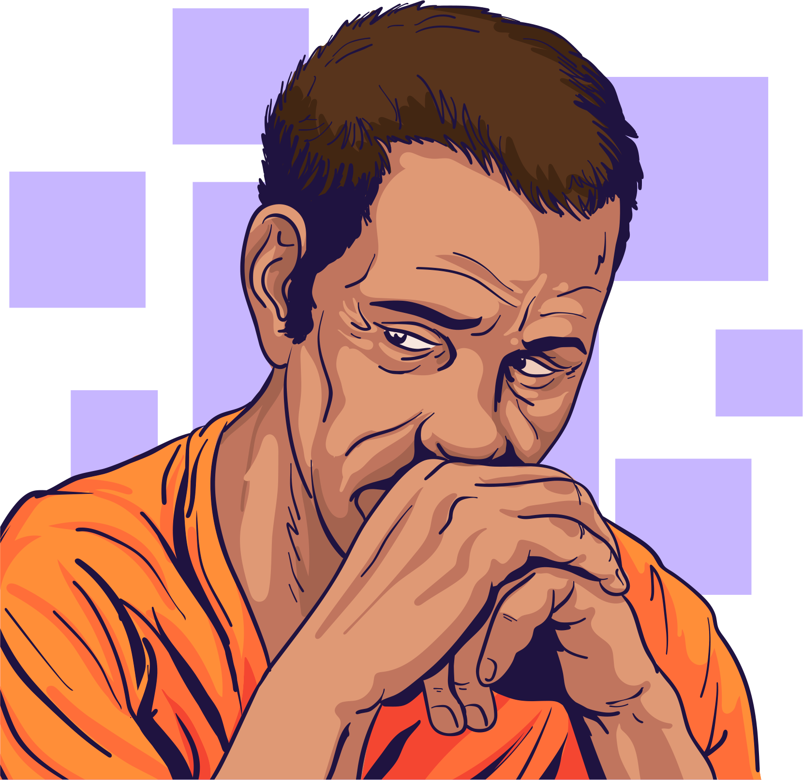

O que é saúde mental?
A Organização Mundial da Saúde (OMS) considera que saúde mental se refere a um bem-estar no qual a pessoa é capaz de usar suas próprias habilidades para lidar com o estresse rotineiro e conseguir trabalhar de forma produtiva. Assim, esse indivíduo se encontra apto a contribuir para a sua comunidade.
Em nenhum momento, a OMS fala da ausência de problemas, mas sim na forma como lidamos com situações adversas no nosso dia a dia.